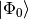

CI: Configuration Interaction¶
Code author: C. David Sherrill and Matthew L. Leininger
Section author: C. David Sherrill
Module: Keywords, PSI Variables, DETCI
Configuration interaction (CI) is one of the most general ways to improve upon Hartree–Fock theory by adding a description of the correlated motions of electrons. Simply put, a CI wavefunction is a linear combination of Slater determinants (or spin-adapted configuration state functions), with the linear coefficients being determined variationally via diagonalization of the Hamiltonian in the given subspace of determinants. For a “single-reference” CI based on reference function , we can write the CI expansion as follows:
(1)
The simplest standard CI method that improves upon Hartree–Fock is a CI
that adds all singly  and doubly
and doubly
 substituted determinants (CISD) to the reference determinant
. The CISD wavefunction has fallen out of favor
because truncated CI wavefunctions are not size-extensive, meaning
that their quality degrades for larger molecules. MP2 is a less
expensive alternative giving results similar to those of CISD for small
molecules, but the quality of MP2 does not degrade for larger molecules.
Coupled-cluster singles and doubles (CCSD) is another size-extensive
alternative; it is only slightly more costly computationally than CISD,
but it typically provides significantly more accurate results.
substituted determinants (CISD) to the reference determinant
. The CISD wavefunction has fallen out of favor
because truncated CI wavefunctions are not size-extensive, meaning
that their quality degrades for larger molecules. MP2 is a less
expensive alternative giving results similar to those of CISD for small
molecules, but the quality of MP2 does not degrade for larger molecules.
Coupled-cluster singles and doubles (CCSD) is another size-extensive
alternative; it is only slightly more costly computationally than CISD,
but it typically provides significantly more accurate results.
The CI code in PSI4 is described in detail in
[Sherrill:1999:CI]. For the reasons stated above, the CI code in
PSI4 is not optimized for CISD computations. Instead, emphasis
has been placed on developing a very efficient program to handle more
general CI wavefunctions which may be helpful in more challenging cases
such as highly strained molecules or bond breaking reactions. The CI
code is based on the fast, determinant-based string formalism
of Handy [Handy:1980]. It can solve for restricted active space
configuration interaction (RAS CI) wavefunctions as described by Olsen,
Roos, Jorgensen, and Aa. Jensen [Olsen:1988]. Excitation-class
selected multi-reference CI wavefunctions, such as second-order CI,
can be formulated as RAS CI’s. A RAS CI selects determinants for the
model space as those which have no more than  holes in the lowest set
of orbitals (called RAS I) and no more than
holes in the lowest set
of orbitals (called RAS I) and no more than  electrons in the highest
set of orbitals (called RAS III). An intermediate set of orbitals, if
present (RAS II), has no restrictions placed upon it. All determinants
satisfying these rules are included in the CI.
electrons in the highest
set of orbitals (called RAS III). An intermediate set of orbitals, if
present (RAS II), has no restrictions placed upon it. All determinants
satisfying these rules are included in the CI.
The DETCI module is also very efficient at computing full configuration interaction wavefunctions, and it is used in this capacity in the complete-active-space self-consistent-field (CASSCF) code. Use of DETCI for CASSCF wavefunctions is described in another section of this manual.
As just mentioned, the DETCI module is designed for challenging chemical systems for which simple CISD is not suitable. Because CI wavefunctions which go beyond CISD (such as RAS CI) are fairly complex, typically the DETCI code will be used in cases where the tradeoffs between computational expense and completeness of the model space are nontrivial. Hence, the user is advised to develop a good working knowledge of multi-reference and RAS CI methods before attempting to use the program for a production-level project. This user’s manual will provide only an elementary introduction to the most important keywords. Additional information is available in the complete list of keywords for DETCI provided in Appendix DETCI.
The division of the molecular orbitals into various subspaces such as RAS spaces, or frozen vs. active orbitals, etc., needs to be clear not only to detci, but also at least to the transformation program (and in the case of MCSCF, to other programs as well). Thus, orbital subspace keywords such as RAS1, RAS2, RAS3, FROZEN_DOCC, FROZEN_UOCC, ACTIVE, etc., should be set in the global section of input so they may also be read by other modules.
For single-reference CI computations, the easiest way to invoke a CI computation with DETCI is simply to call energy(), optimize(), etc., with the common name for that CI wavefunction, like energy('cisd') for a CISD single-point energy. The Python driver recognizes cisd, cisdt, and cisdtq. Higher order single-refernce CI wavefunctions, like those including singles through 6-fold excitations, can be invoked using numbers, like ci6. A full CI can be specifed by fci. More complicated CI computations, like RASCI, can be performed by setting the appropriate keywords and calling the module generically like energy('detci'). The latter approach will also work for any of the previously-mentioned CI wavefunctions for which the driver has built-in shortcuts, so long as the relevant options (especially EX_LEVEL) are set appropriately. Some examples of single-refence CI, RASCI, and full CI computations are provided in psi4/samples.
Basic DETCI Keywords¶
R_CONVERGENCE¶
Convergence criterion for CI residual vector in the Davidson algorithm (RMS error). The default is 1e-4 for energies and 1e-7 for gradients.
- Type: conv double
- Default: 1e-4
FROZEN_DOCC¶
An array containing the number of frozen doubly-occupied orbitals per irrep (these are not excited in a correlated wavefunction, nor can they be optimized in MCSCF
- Type: array
- Default: No Default
FROZEN_UOCC¶
An array containing the number of frozen unoccupied orbitals per irrep (these are not populated in a correlated wavefunction, nor can they be optimized in MCSCF
- Type: array
- Default: No Default
ICORE¶
Specifies how to handle buffering of CI vectors. A value of 0 makes the program perform I/O one RAS subblock at a time; 1 uses entire CI vectors at a time; and 2 uses one irrep block at a time. Values of 0 or 2 cause some inefficiency in the I/O (requiring multiple reads of the C vector when constructing H in the iterative subspace if DIAG_METHOD = SEM), but require less core memory.
- Type: integer
- Default: 1
DIAG_METHOD¶
This specifies which method is to be used in diagonalizing the Hamiltonian. The valid options are: RSP, to form the entire H matrix and diagonalize using libciomr to obtain all eigenvalues (n.b. requires HUGE memory); OLSEN, to use Olsen’s preconditioned inverse subspace method (1990); MITRUSHENKOV, to use a 2x2 Olsen/Davidson method; and DAVIDSON (or SEM) to use Liu’s Simultaneous Expansion Method, which is identical to the Davidson method if only one root is to be found. There also exists a SEM debugging mode, SEMTEST. The SEM method is the most robust, but it also requires
CI vectors on disk, where
is the maximum number of iterations and
is the number of roots.
- Type: string
- Possible Values: RSP, OLSEN, MITRUSHENKOV, DAVIDSON, SEM, SEMTEST
- Default: SEM
OPDM¶
Do compute one-particle density matrix if not otherwise required?
- Type: boolean
- Default: false
TDM¶
Do compute the transition density? Note: only transition densities between roots of the same symmetry will be evaluated. DETCI does not compute states of different irreps within the same computation; to do this, lower the symmetry of the computation.
- Type: boolean
- Default: false
MPN¶
Do compute the MPn series out to kth order where k is determined by MAX_NUM_VECS ? For open-shell systems REFERENCE is ROHF, WFN is ZAPTN), DETCI will compute the ZAPTn series. GUESS_VECTOR must be set to UNIT, HD_OTF must be set to TRUE, and HD_AVG must be set to orb_ener; these should happen by default for MPN = TRUE.
- Type: boolean
- Default: false
For larger computations, additional keywords may be required, as described in the DETCI section of the Appendix DETCI.
Arbitrary Order Perturbation Theory¶
The DETCI module is capable of computing energies for arbitrary order Møller–Plesset perturbation theory (MPn, for closed-shell systems with an RHF reference) and for Z-averaged perturbation theory (ZAPTn, open-shell systems with an ROHF reference). However, please note that these computations are essentially doing high-order CI (up to full CI) computations to obtain these results, and hence they will only be possible for very small systems (generally a dozen electrons or less).
The simplest way to run high-order perturbation theory computations is to call, e.g., energy('mp10') to invoke a MP10 computation or energy('zapt25') to invoke a ZAPT25 computation. This will automatically set several additional user options to their appropriate values. The program uses the Wigner (2n+1) rule to obtain higher-order energies from lower-order wavefunctions.
For the interested reader, the additional user options that are automatically set up by the calls above are as follows. A call like energy('mp10') sets MPN to TRUE. The program uses the Wigner (2n+1) rule by default (MPN_WIGNER = TRUE) and figures out what order of wavefunction is necessary to reach the desired order in the energy. The program then sets MAX_NUM_VECS to the required order in the wavefunction. By default, the requested n-th order energy is saved as the current energy to the process environment. ZAPTN works essentially the same way for an ROHF reference.
Arbitrary Order Coupled-Cluster Theory¶
This DETCI-based version of this feature is not yet released. However, the current version of the code does include an interface to Kallay’s MRCC code.
The DETCI module is also capable of computing arbitrary-order coupled-cluster energies, using an approach similar to that of Hirata and Bartlett [Hirata:2000:216], or of Olsen [Olsen:2000:7140]. Notably, the approach in DETCI also allows arbitrary-order active space coupled-cluster procedures. The general algorithm for doing this in DETCI is inefficient compared to optimized lower-order coupled-cluster codes and should not be used for CCSD, where the CCENERGY module is much more efficient. For higher-order CC (like CCSDT and beyond), the code is also not as efficient as the MRCC code by Kállay, to which PSI4 can interface (see Section Interface to MRCC by M. Kállay); however, it may allow certain truncations of the model space that might not be available presently in MRCC. For very small systems, the code can be useful for testing of, for example, CCSDTQ or its active-space CCSDtq analog [Piecuch:1999:6103].
To perform arbitrary-order coupled-cluster, set the DETCI option CC to TRUE, and set CC_EX_LEVEL (note: not EX_LEVEL) to the desired coupled-cluster excitation level, and invoke energy('detci'). Various other DETCI options have a similar option for coupled-cluster, usually named beginning with CC. The full list of options is given in Appendix DETCI.